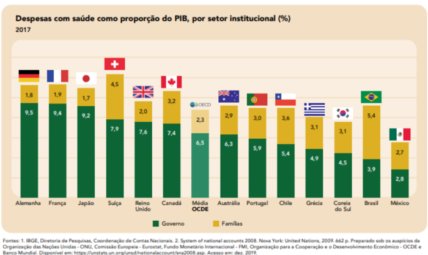

O que é o setor privado de saúde no Brasil hoje?
O Estado, através de vários mecanismos é um importante fomentador de parte significativa do mercado privado de saúde. Para se ter uma ideia, em fevereiro de 2021 a Revista Forbes anunciou os novos bilionários no Brasil em comparação ao ano anterior. Depois de um ano de pandemia da COVID-19, e sob regime da mais profunda austeridade fiscal com os gastos sociais no mundo, os novos bilionários (e seus familiares) são os donos de hospitais privados, laboratórios privados e empresas de planos privados de saúde.

Fonte: Forbes Online - 5/2/2021
Você deve ter visto até aqui que a instituição do SUS, pela Constituição de 1988 e pelas Leis Orgânicas da Saúde (LOS) 8.080/90 e 8.142/90, representou uma virada importante na trajetória da proteção social em saúde no país. A Constituição determinou que “[…] a saúde é direito de todos e dever do Estado, garantido mediante políticas sociais e econômicas que visem à redução do risco de doença e de outros agravos e ao acesso universal e igualitário às ações e serviços para sua promoção, proteção e recuperação”. Ao mesmo tempo, no seu artigo 199, inscreveu a liberdade do setor privado de saúde em atuar.
Na década de 1920, a assistência à saúde era organizada em cada empresa empregadora, para a oferta de serviços de saúde a seus funcionários e dependentes (Lei Eloi Chaves, 1923). Em 1933, foram criados os Institutos de Aposentadoria e Pensões, IAP, que estabeleceram um novo desenho para o sistema, onde a assistência à saúde deixou de ser organizada em cada empresa e passou a sê-lo por categoria profissional (é o que se denomina modelo de Seguro Social do sistema de saúde).
Posteriormente, a estrutura dos seguros passou por grandes mudanças, sobretudo quando da unificação dos IAP no Instituto Nacional de Previdência Social, INPS, em 1966, que uniformizou os benefícios e contribuições das categorias profissionais.
Lei Eloy Chaves, sancionada em 1923 pelo presidente Arthur Bernardes
Na prática, tinham acesso aos serviços de saúde apenas as pessoas que contribuíam financeiramente para sua respectiva caixa ou instituto de aposentadoria e pensão da categoria profissional e pessoas que realizavam pagamentos diretos aos prestadores ou por meio de ações filantrópicas. Isto é, modelo tinha uma estrutura de financiamento predominantemente vinculada ao emprego, por meio de contribuições do empregador e do empregado.
Desse modo, parcela significativa da população brasileira, que não estava inserida no mercado formal de trabalho, não tinha acesso aos cuidados de saúde, ficando sujeita à caridade e filantropia. As ações de saúde pública, na época, ainda eram bastante limitadas e restritas a poucos estados.
Com o processo de redemocratização do Estado brasileiro, a promulgação da Constituição de 1988 e a implementação do SUS por meio das LOS, a saúde se torna um direito de cidadania e passa se inserir no modelo conhecido como Sistema Público universal.
No Brasil, o SUS compõe o sistema da Seguridade Social. Ele é caracterizado por ser abrangente e universal, gratuito no ato do uso, majoritariamente financiado por tributos específicos, incluindo todos os cidadãos e definindo o Estado como responsável por garantir e prover os serviços à população.
A partir desses marcos legais o sistema público de saúde do país passa a atuar de forma descentralizada, operando sob responsabilidade das três esferas de governo (Federal, Estadual e Municipal), que compartilham também o financiamento de sua operação. Prevê-se que o SUS tenha coordenação nacional.
Movimento da Reforma Sanitária Brasileira
Esta reforma do sistema de saúde configurou uma conquista política e social importante. Ela pode ser atribuída a diversos esforços e lutas sociais empreendidos pela população em defesa das liberdades democráticas. Foi também resultado do Movimento da Reforma Sanitária brasileira, organizado ao longo das décadas de 1960 e 1970, onde se agregaram os profissionais de saúde, trabalhadoras e trabalhadores do país, movimentos de base popular, lideranças políticas do campo democrático e profissionais do meio acadêmico. Veja mais sobre a Reforma Sanitária brasileira no Módulo 1 desse curso.
Entretanto, a implementação de um sistema de saúde de caráter universal e descentralizado no Brasil, nos moldes de um federalismo cooperativo, não foi isenta de conflitos e tensões e esbarrou em diversos desafios. Notadamente o subfinanciamento do SUS e a convivência não regulada do setor público com o privado.
As históricas e profundas desigualdades sociais e em saúde não permitiram que todas as cidades e estados do país alcançassem garantir uma saúde integral para sua população, dada as diferentes capacidades dos governos subnacionais. Afinal, como se sustentam as responsabilidades e capacidades políticas, administrativas e tributárias a serem exercidas pelos maioria dos municípios que possuem população de até 20 mil habitantes (cerca de 75% do dos municípios brasileiros)?
Os municípios pequenos não possuem as mesmas oportunidades do que os lugares de maior porte populacional e desenvolvimento econômico, mas, ao mesmo tempo, são tanto ou mais influenciados pelos poderes políticos locais - desde a formação das capitanias hereditárias e posteriormente das cidades.
Além disso, o predomínio de políticas econômicas pouco articuladas com as políticas sociais e a agenda de reforma do Estado a partir dos anos 90, de inspiração neoliberal, impuseram limites à lógica da Seguridade Social e à expansão de políticas abrangentes e universais.
No mesmo texto constitucional que configura o SUS e contém seus princípios e diretrizes, foi assegurada a possibilidade de coexistência de atividades privadas na área. Embora autores como Saltman afirmem que é inevitável a presença do mix público-privado nos sistemas de saúde em todos os países, algumas questões precisam ser colocadas:
-
Em que base deve se dar esse arranjo para que os objetivos das políticas de saúde sejam preservados?
-
Como os princípios do SUS podem ser garantidos quando o interesse público está permeado pelos interesses privados, em todas as dimensões da sociedade?
No Brasil, a participação do setor privado na saúde está prevista na Constituição e na Lei Orgânica da Saúde nº 8.080/90. Essa participação pode ser tanto em caráter complementar ao SUS, por meio de contratos e convênios com instituições e organizações privadas quando prestam serviços ao SUS, como em caráter suplementar, livre à iniciativa privada, como planos e seguros privados de saúde. E os interesses públicos nem sempre são preservados dos interesses dos atores que atuam no setor privado.
Caráter complementar no setor de saúde, estabelecido na Constituição
Para responder a essa pergunta é preciso voltar ao tempo pré SUS, quando as políticas públicas influenciaram brutalmente o crescimento e o fortalecimento do setor privado brasileiro.
Os esquemas privados entre empresas empregadoras e prestadores começaram a ser desenvolvidos no tempo em que a Previdência, por meio do INPS se tornou o principal comprador de serviços médico-hospitalares privados para os trabalhadores. Eram os, então denominados, convênios. Eles combinavam pacotes de serviços e seus respectivos preços para determinada quantidade de trabalhadores e seus familiares, já sob a lógica de asseguramento privado.
Com o grande desenvolvimento econômico-industrial e a urbanização do país desde a década de 1950, empresas brasileiras de maior porte e empresas estrangeiras começaram a contratar diretamente médicos, hospitais e laboratórios privados para proverem a assistência à saúde de seus funcionários e familiares nas regiões em que se instalavam, incialmente na região do ABC paulista, mas também nas grandes cidades. Esse movimento foi fortemente reforçado com um dos mais fortes movimentos propiciados pelo Estado brasileiro durante a ditadura militar, de financiamento público a hospitais privados por intermédio do Fundo de Apoio ao Desenvolvimento Social (FAS) (Lei 6.168/74).
A partir da criação do Instituto Nacional de Assistência e Previdência Social, INAMPS, parte do Sistema Nacional de Previdência e Assistência Social (SINPAS), em 1977, dois movimentos influenciaram brutalmente o desenvolvimento do mercado privado de saúde no país. De um lado, para prover assistência aos trabalhadores formais, os convênios do INAMPS com os prestadores de serviços de saúde privados cresceram vigorosamente. Por outro lado, a Previdência deixou de recolher a parcela de contribuição referente aos benefícios e à assistência à saúde quando as empresas empregadoras já tivessem contratado esquemas próprios de asseguramento.
Com esses acontecimentos, ocorridos nas décadas de 1960 e 1970, houve uma expansão da assistência à saúde organizada por meio do Estado via INAMPS, ao mesmo tempo em que foi incentivada a expansão da assistência organizada pelas empresas empregadoras. Isso ocorria por meio do asseguramento privado destinado aos seus trabalhadores e seus familiares.
E, então, esses dois movimentos impulsionaram o crescimento do mercado privado de prestação de serviços, que se deu tanto pela compra dos serviços feita pelo Estado, como pela contratação dos serviços feita pelas empresas empregadoras.
Sobre esse incentivo ao não pagamento das contribuições previdenciárias em troca de tais contratos, Hesio Cordeiro assinalou:
“se, no debate político, emergia entre 1974-1975 a questão da 'estatização', no plano dos efeitos concretos, a política médico-assistencial da Previdência Social assegurava o crescimento do setor médico-empresarial”
Unidades de saúde com fins lucrativos
Fonte: Braga e Paula, 1986
Esse histórico de estrutura da oferta de serviços de saúde levou à uma configuração em que hoje o Estado continua utilizando e financiando a iniciativa privada para poder garantir a integralidade da cobertura de serviços de saúde prevista no SUS. Isso ocorre seja por falta de profissionais, insumos básicos, equipamentos, medicamentos, leitos, ou pela própria falta de estrutura física do serviço. Essa relação pode se dar por contratos ou convênios. É o que se chama de “complementar”, na Constituição de 1988.
A contratação de serviços ao setor privado e o pagamento aos prestadores vinculados ao SUS é responsabilidade dos Estados e Municípios. A legislação que regulamenta o sistema estabelece que na contratação de prestadores privados pelo sistema público deve ser dada prioridade às instituições filantrópicas sem fins lucrativos.
O sistema público também pode estabelecer parcerias com Organizações da Sociedade Civil de Interesse Público (OSCIP) ou por meio de contratos de gestão com Organizações Sociais (OS). A gestão de unidades de serviços públicos por OS não caracteriza como complementar porque os serviços permanecem com o caráter jurídico-administrativo público, com a diferença que agora não são os procedimentos ou recursos físicos privados contratados pelo SUS, mas também a gestão da unidade, as pessoas que nela trabalham, ou seja, o a inteligência do processo de trabalho. Essas são formas mais recentes das relações público-privadas, especificamente de gestão privada do serviço público, que podem executar tanto os serviços de saúde como a própria gestão da unidade de saúde.
O que é uma OSCIP
Organizações da Sociedade Civil de Interesse Público (OSCIP) é uma figura jurídica-privada sem fins lucrativos criada pela Lei nº 9.790/1999, para fomento e execução de atividades de interesse público, desde que seus objetivos sociais e normas estatutárias atendam aos requisitos instituídos pela referida lei.
As formas do sistema público estabelecer parcerias vêm gradativamente crescendo e são objeto de estudos de avaliação para verificação de possível menor qualidade da atenção à saúde, hipótese muitas vezes confirmada.
PARA SABER MAIS:
Assista o programa Sala de Convidados, sobre Parcerias Público-Privadas. Esta edição do programa, debatem o assunto: a pesquisadora do Instituto de Estudos em Saúde Coletiva da Universidade Federal do Rio de Janeiro (IESC/UFRJ) e membro do conselho diretor da Associação Brasileira de Saúde Coletiva (Abrasco), Lígia Bahia; o pesquisador do Instituto de Pesquisa Econômica Aplicada (Ipea) e especialista em Economia da Saúde, Alexandre Marinho; e o Pesquisador e Professor do Laboratório de Formação Geral na Educação Básica da Escola Politécnica de Saúde Joaquim Venâncio (EPSJV/Fiocruz), André Vianna Dantas.
Setor de saúde suplementar
O setor de saúde suplementar, por sua vez, é todo o mercado em torno do que chamamos de planos e seguros privados de saúde, de afiliação voluntária. Eles são ofertados por empresas que operam os planos privados de saúde, denominadas operadoras. Na maioria dos casos, os planos são esquemas de pré-pagamento, contratados e financiados parcial ou integralmente pelos empregadores. No geral, o valor dos planos é descontado dos empregados direto no contracheque, parcial ou integralmente. Os planos também podem ser inteiramente financiados pela renda das próprias famílias, que pagam diretamente as mensalidades.
Planos privados de saúde
Cada operadora pode comercializar vários planos de saúde, que se diferenciam principalmente pelo prestígio de sua rede credenciada proporcional ao valor da mensalidade. Eles podem variar desde um plano mais simples com uma rede composta com poucos hospitais, clínicas e laboratórios, até uma rede ampla com muitos hospitais e os mais famosos. Também varia a cobertura geográfica, que pode ser desde os planos com rede em um só município até uma cobertura nacional, que pode ser acessada em todo o país.
O preço dos planos, usualmente pago em mensalidades, também varia de acordo com o prestígio e abrangência dessa rede, a faixa etária do cliente, bem como diferentes modalidades de contratação e segmentação da cobertura. O valor pago pela operadora à cada procedimento ou pacote da rede costuma ser medido em tabela (por exemplo 1 vez a tabela tal, 2x … até n vezes o valor de tabela) e também influencia o valor da mensalidade, uma vez que vai ser mais um diferencial no atendimento ao cliente/paciente quando usar o serviço de saúde. Clique nos cartões para saber sobre as modalidades dos planos privados de saúde:
Individual
Personalizado para um único indivíduo
Familiar
Estende-se aos familiares diretos do contratante (p. ex. Pai, mãe, cônjuge e filhos)
Coletivo por adesão
Contratado por um grupo de pessoas , normalmente em associações de classes, sindicatos etc.;
Coletivo empresarial
Direcionado para empresas públicas e privadas que desejam atender seus colaboradores. Ele é debitado diretamente na folha de pagamento do funcionário
A cobertura assistencial do plano também varia de acordo com quais serviços o cliente poderá usar, é o que chamamos de segmentação assistencial e pode ser ambulatorial, hospitalar, com ou sem obstetrícia, odontológico. Existe um plano denominado Referência, que é a combinação das modalidades de cobertura ambulatorial + hospitalar com obstetrícia. O mais importante para entender sobre a segmentação dos planos privados é que aproximadamente 90% dos clientes de planos privados de saúde (excluídos os com plano exclusivamente odontológico) tem a cobertura mais ampla da assistência de saúde, ou seja, cobertura ambulatorial + hospitalar.
Isso reflete a herança do modelo do setor suplementar dos anos 1920, quando a assistência à saúde era organizada pelas empresas empregadoras para a oferta de serviços de saúde a seus funcionários e dependentes. Essa estrutura se transformou, ao longo do século XX, mas permaneceu com as mesmas características principais.
• Segmentação da cobertura
A regulamentação setorial, desde 1998, define que tipos de serviço devem estar disponíveis para o usuário em cada plano. A ilustração a seguir mostra os tipos de cobertura permitidos pela regulamentação. Clique nos cartões para ver os serviços cobertos por cada pacote de serviço:
Ambulatorial
Consultas, Exames, Tratamentos e outros procedimentos ambulatoriais
Hospitalar sem obstetrícia
Internações
Hospitalar com obstetrícia
Internações e partos
Odontológico
Odontológicos
Referência
Consultas, Exames, Tratamentos e outros procedimentos ambulatoriais. Internações e partos
As informações dos cartões são de Santos (2009).
A forte expansão do segmento suplementar no decorrer das últimas décadas reforçou uma característica do sistema de saúde no Brasil: a duplicidade de cobertura de serviços de saúde. Isso beneficia especialmente os estratos populacionais de maior renda, que estão integralmente cobertos pelo SUS e em grande parte pelos planos ambulatoriais + hospitalares. Para essa parcela coberta pelo setor de saúde suplementar, muitas das ações de saúde são asseguradas pelo sistema público. Algumas de forma exclusiva, como as de vigilância sanitária, epidemiológica e o fornecimento de medicamentos para doenças raras; outras, de forma primordial, como as de vacinação, o atendimento a emergências e os transplantes; e outros muitos procedimentos de assistência médico-hospitalar.
• Cobertura populacional do setor privado
Historicamente, o setor de saúde suplementar brasileiro tem a mais alta cobertura populacional quando comparado aos outros países com sistema de saúde público universal. As vantagens e facilitações recebidas por políticas públicas e o interesse das empresas empregadoras, profissionais e prestadores de serviços de saúde, de sindicatos e de indivíduos que querem plano privado de saúde, colaboram para manter a alta cobertura.
O mercado de planos privados de saúde no Brasil é o segundo maior do mundo, ficando atrás apenas dos Estados Unidos (EUA), que são o país que possui o gasto em saúde mais elevado do mundo. Atualmente, o gasto dos EUA com saúde representa 17% do PIB do país e é fortemente caracterizado por um modelo de proteção social em saúde residual/liberal, com forte participação do setor privado e péssimos resultados de saúde para a população.
Distribuição dos planos de assistência à saúde
Fonte: Agência Nacional de Saúde Suplementar, 2020
Pesquisa Nacional por Amostragem Domiciliar (PNAD), do IBGE e outras pesquisas mostram que o percentual de pessoas com planos privados sempre está em torno dos 20 a 25% da população brasileira.
A quantidade de operadoras de planos de saúde também é bastante expressiva no país e os clientes estão cada vez mais concentrados em poucas operadoras. Em 2005, as três maiores operadoras absorviam aproximadamente 12% dos clientes e 51 detinham, juntas, metade do mercado. Já em 2020, duas operadoras concentravam 14% da clientela e metade do mercado estava concentrado em apenas 21 instituições. Com isso, percebe-se que, apesar de um dos argumentos para a criação da ANS ser a regulamentação do mercado para evitar concentração, esse objetivo não foi atingido e a concentração foi aprofundada.
Evolução da distribuição dos clientes de planos privados de saúde por quantidade de operadoras

Operadora de plano de saúde é a empresa que vende planos para sua clientela e compra os serviços dos prestadores de serviços de saúde. Para isso, a operadora realiza diferentes tipos de atendimento ao cliente. Em grande parte dos casos, quanto maior for a operadora, maiores serão as redes de atendimento dos planos.
Distribuição dos planos de assistência à saúde
Maiores operadoras de planos privados de saúde (Brasil, 2021)
Fonte: ANS (2021)
Apesar dos números expressivos, a atuação do setor privado suplementar no Brasil é bastante concentrada em estados das regiões Sudeste, Sul e parte da Centro-Oeste, o que se expressa na distribuição espacial da taxa de pessoas com planos privados de saúde por Unidade da Federação (UF), a qual é proporcional ao desenvolvimento socioeconômico local.
Diferente do SUS, que está capilarizado em todo território nacional, principalmente por meio da Atenção Primária à Saúde (APS) e da Estratégia de Saúde da Família (ESF), o setor de saúde suplementar foca sua atuação nos lugares que lhes são mais rentáveis e lucrativos. É nesses lugares também onde está a maior concentração de renda, de escolaridade, de empregos e de oferta de serviços de saúde.
Taxa de cobertura dos planos de assistência médica por UF (Brasil – fevereiro/2020)
Fonte: SIB/ANS/MS - 02/2023 e População - IBGE/2012
Desse modo, o setor privado acompanha o dinamismo econômico local, assim como ressalta a dimensão social que marca a oferta e o acesso à rede de serviços de saúde no país.
• Financiamento do setor privado
A fonte de financiamento do SUS é pública e se dá por meio de tributos. Já a do setor privado pode se dar pelo desembolso direto e/ou por meio de seguros privados e, ainda, por recursos públicos, conformando a primeira forma de imbricamento público-privado na realidade brasileira que trazemos nesta aula.
O setor privado recebe recursos públicos por:
-
desonerações fiscais a prestadores privados e consumidores dos seus serviços;
-
gasto de órgãos públicos com prestadores privados para a assistência à saúde de seus trabalhadores e familiares e;
-
uso de serviços do SUS por segurados com contrato para os serviços utilizados, quando não ocorre o ressarcimento pelas operadoras ao sistema público;
-
redução/abono/perdão de multas e refinanciamento de dívidas
O mercado de seguros privados representa grande parte do investimento de recursos financeiros no setor de saúde e o financiamento privado no Brasil representa maior parcela do PIB do que o público. Comparado à outros países que possuem sistema público de saúde, o Brasil é o único país com sistema público universal de saúde onde o gasto privado supera o gasto público.

Em 2018, o país gastava 9,5% do seu Produto Interno Bruto (PIB) com saúde, acompanhando a média dos países que compõem a Organização para a Cooperação e o Desenvolvimento Econômico (OCDE). De acordo com dados coletados em fevereiro de 2021, no Repositório de dados do Observatório Global de Saúde da OMS, menos da metade desse gasto (41,7%) era público no nosso país.
Ao mesmo tempo, no financiamento específico do SUS, o sistema enfrenta problemas de subfinanciamento desde o início de sua implantação e, mais recentemente, de desfinanciamento.
Além dos planos e seguros privados, há também os pagamentos de desembolso direto, no ato da prestação do serviço - em inglês, out-of-pocket. Esses são os atendimentos pagos pelo paciente diretamente a clínicas, laboratórios, hospitais, profissionais liberais autônomos que prestam o serviço requisitado, além da compra de medicamentos, óculos etc. Observando o histórico dos gastos com saúde, esse tipo de gasto é o que mais tende a crescer em todo o mundo.
No Brasil, o desembolso direto a prestadores privados de serviços de saúde, constitui um grande segmento de consumo no mercado,representando a segunda forma de imbricamento público-privado no campo da prestação dos serviços. Em 2006, segundo a Pesquisa de Orçamentos Familiares do IBGE, os gastos por desembolso direto representaram mais da metade do gasto privado em saúde no país e não mudou muito desde então.
Além disso, seja por meio dos seguros privados ou pelo pagamento privado direto, é possível comprar junto aos estabelecimentos públicos, serviços médico-hospitalares de média e alta complexidade. Isso geralmente ocorre nas instituições com quadro de profissionais referenciados, como os hospitais universitários e de ensino, que realizam serviços de saúde para o SUS.
Cada vez mais, há incentivo à participação do setor privado na saúde, seja pelo financiamento ou por meio de elevadas isenções fiscais e descontos em multas.
Acompanhe a proporção do gasto tributário/desonerações fiscais em saúde e a despesa do Ministério da Saúde, entre os anos de 2003 e 2018.
Proporção do gasto tributário em saúde em relação ao gasto do Ministério da Saúde e do gasto tributário total (2003-2018), em %
Fonte: Ministério da Saúde e Centro de Estudos Tributários e Aduaneiros da Receita Federal do Brasil (Cetad/RFB)
Elaboração: Carlos Octávio Ocké-Reis - Ipea, Rio de Janeiro, 2021
Esse arranjo se dá porque, embora o SUS não permita o financiamento privado de seus serviços, existe um vácuo na legislação que faz com que, na prática, a venda dos serviços para o setor privado possa se dar por intermédio de fundações criadas ou contratadas para gerenciar serviços desses hospitais. Essas instituições não têm impedimento para vender serviços para o setor privado. Aqui reside a terceira forma de imbricamento público-privado neste campo da prestação.
• Força econômica do sistema privado
O setor suplementar movimenta valores financeiros expressivos, o que lhe dá força política e econômica no cenário de disputa dentro do setor de saúde brasileiro. O quadro abaixo ilustra a magnitude desse fenômeno.
Receitas e despesas de todas as operadoras, por tipo (Brasil - 2012-2022)
Fontes: DIOPS/ANS/MS - 10/04/2023
Notas: 1. Dados preliminares, sujeitos à revisão. 2. As operadoras da modalidade Autogestão passaram a enviar informações financeiras, obrigatoriamente, a partir de 2007, com exceção daquelas por SPC (Secretaria Previdência Complementar), obrigadas a partir de 2010. As Autogestões por RH (Recursos Humanos) não são obrigadas a enviar informações financeiras.
O orçamento federal para a Saúde em 2020, excluídas as despesas do “orçamento de guerra”, foi de aproximadamente 125 bilhões, cerca de 100 bilhões a menos que o setor suplementar movimentou nesse mesmo ano.
Importante destacar que todas e todos usamos o SUS.
Isto é, mesmo quem tem planos e seguros privados de saúde também usa o SUS. Hoje, mais de 70% da população brasileira usa exclusivamente o SUS e 100% precisam dele. Em outras palavras, parte importante da população coberta por planos e seguros privados ou que realiza desembolso direto também utiliza a rede pública para ações de saúde pública, como vacinação, saneamento básico e vigilâncias, assim como para procedimentos mais complexos e de maior custo e em situações de urgência ou emergência. E muitas vezes essa população também usa o SUS para os mesmos serviços que estão cobertos pelo plano privado.
Este é um dos motivos pelo qual é importante defender a manutenção e o aprimoramento do nosso sistema público!
Além disso, existe um compartilhamento de recursos físicos e humanos (profissionais da saúde) entre o sistema público e o privado, uma vez que os prestadores privados podem, simultaneamente, atender pacientes oriundos dos diferentes segmentos, da mesma forma que os profissionais do setor público não têm vínculos empregatícios de dedicação exclusiva, podendo, desde que haja compatibilidade de horários, manter simultaneamente vínculo com o setor privado ou atuar de forma autônoma.
Vamos refletir
Com o conhecimento que você adquiriu até aqui, você já é capaz de refletir de forma crítica sobre algumas questões:
-
O que é arranjo público-privado no sistema de saúde?
-
O segmento suplementar desonera financeiramente o sistema público, ou na demanda por serviços?
-
O Estado pode interferir sobre o arranjo público-privado? Como é essa regulamentação?
Pense sobre essas questões e converse com seus colegas. Essa é uma forma de reforçar e compartilhar o seu aprendizado!
Em 2016, o então Ministro da Saúde, Ricardo Barros, apresentou à ANS, em forma de consulta pública, a proposta para oferta de planos “populares”. Diante de grande resistência da sociedade civil a consulta pública não teve fôlego para virar norma e os planos acessíveis não foram implementados.
É importante conhecer o modelo dessa proposta porque é o que há décadas vem persistentemente sendo sugerido pelos agentes do mercado privado como política pública e provavelmente essa pressão continuará acontecendo. Isso se observa tanto nos pleitos desses atores ao Estado, como em recomendações de agências internacionais como Banco Mundial, Organização Mundial de Saúde, entre outras.
Em maio de 2016, o Ministro da Saúde da época, Ricardo Barros, declarou à imprensa que seria preciso rever o tamanho do SUS e que não seria possível “sustentar o nível de direitos que a Constituição determina”. Seu discurso era coerente com a política que vinha sendo implementada no país, de brutal redução do gasto público com as políticas sociais, entre elas o SUS. Essa política é denominada Austeridade Fiscal dos gastos sociais, fruto do paradigma conhecido como neoliberal. Ela é o cerne das propostas pelas agências internacionais e de fomento.
PARA SABER MAIS:
Assista o programa Sala de Convidados, que debate a crise financeira que atingia o país, em 2017, quando milhões de brasileiros deixaram de poder pagar por planos de saúde e passaram a usar o Sistema Único de Saúde (SUS). O programa discute se e como o Sistema Único de Saúde consegue atender a essa demanda com a diretora-executiva do Centro Brasileiro de Estudos de Saúde (Cebes), Isabela Santos; a pesquisadora em Saúde do Instituto de Defesa do Consumidor (Idec), Ana Carolina Navarrete; e o especialista em Saúde Coletiva do Instituto de Medicina Social da Universidade do Estado do Rio de Janeiro (IMS/UERJ) e professor da Universidade Estácio de Sá, Paulo Henrique de Almeida Rodrigues.
Ainda em dezembro do mesmo ano, o então Presidente da República, Michel Temer, aprovou a Emenda Constitucional (EC) nº 95/2016 (oriunda da PEC nº 55 do “teto dos gastos”), que congela os gastos públicos e sociais por 20 anos (saúde, educação, segurança pública).
Essa agenda doméstica foi incentivada por documentos produzidos por organismos internacionais multilaterais, como o Banco Mundial (Bird) e o Fundo Monetário Internacional (FMI), no setor. O relatório do Bird, “Um ajuste justo: análise da Eficiência e Equidade do Gasto Público no Brasil”, publicado em novembro de 2017, trouxe pressão para diminuir financiamento público e aumentar participação do financiamento privado nos direitos sociais de caráter universal (saúde, educação, etc.), além de pressão para mais facilitações do Estado ao setor privado. Uma fala do diretor do Bird publicada na grande imprensa ilustra parte dessa pressão, ele dizia que era preciso uma “Reforma profunda da previdência” para o Bird apoiar o Brasil.
PARA SABER MAIS:
Assista Apresentação e debate do Relatório do Banco Mundial sobre o gasto público em saúde no Brasil, ocorrido em 2017.
Apresentação: Edson C. Araujo - Economista Sênior, Health, Nutrition & Population, Banco Mundial, Washington.
Debatedores Convidados: Maria Estela de Castro Lobo (HUCFF-UFRJ), Ligia Giovanella (ENSP-FIOCRUZ), Félix Héctor Rigoli (ISAGS), Bruno Leonardo (UERJ), Eduardo Levcovitz, Paulo Henrique Almeida Rodrigues (IMS-UERJ).
Coordenação: Prof Dr. Mario Dal Poz (IMS-UERJ)
Destacamos que, mesmo com todos os problemas políticos, de gestão e de financiamento, o SUS, e toda ordem social da Constituição de 88, é uma política pública que mudou diversos indicadores de condições de vida da população nos últimos 30 anos. E que o ataque às políticas sociais sob argumento da austeridade fiscal para enfrentar a crise se demonstrou um “austericídio fiscal”, que não resolveu em nada a crise econômica e atacou todo o sistema de proteção social - justamente quando a população mais precisa dele, como os momentos de crise econômica e aumento do desemprego. Note-se que toda desconstrução do SUS aumenta os problemas de saúde e a necessidade da população.
Para saber mais sobre os efeitos dos direitos sociais e os da austeridade no Brasil e no mundo, ver livro do Cebes
É importante compreender que a pressão internacional pela política de austeridade ganhou força como uma resposta à crise econômica mundial de 2008. Seus reflexos duram até os dias atuais, em especial nos arranjos público-privados - que é o foco dessa aula.
O governo de Jair Bolsonaro, iniciado em 2019, aprofundou a política de austeridade fiscal com os gastos sociais e buscou operacionalizar uma reforma do SUS. Inclusive, durante a pandemia de Covid, foram observadas diferentes disputas entre o público e o privado.
• Cobertura Universal de Saúde
Essa concepção de política socioeconômica coincide com o esforço da Organização Mundial de Saúde, que começou a tomar forma a partir de 2005, para emplacar a proposta de Universal Health Coverage, UHC (Cobertura Universal de Saúde, CUS) para todos os países do mundo. Essa política atualmente já tem consistência na Declaração de Astana (2018) e nos Objetivos de Desenvolvimento Sustentável da Organização das Nações Unidas (ONU). A Cobertura Universal de Saúde defende, à primeira vista, a expansão da taxa de cobertura da população com acesso à saúde.
É extremamente desejável que o acesso à Saúde seja baseado na premissa que todos tenham acesso integral à saúde como direito de cidadania, em um modelo de proteção social universal. Entretanto, quando analisada a fundo, percebe-se que a CUS propõe a segmentação do acesso, da cobertura de serviços e do financiamento do serviço de saúde, para diferentes grupos populacionais desde que toda a população tenha algum tipo de cobertura com algum tipo de financiamento, o que é absolutamente diferente do direito à saúde como cidadania.
A CUS também prevê que a segmentação seja realizada por meio da expansão do mercado privado de saúde, tanto para o financiamento dos serviços de saúde, que poderiam vir a ser por meio de seguros privados de saúde, como para a provisão de parte dos serviços de saúde, uma vez que haveria uma cesta de serviços a serem cobertos previamente definida.
O modelo da Cobertura Universal de Saúde rompe, portanto, com a lógica dos sistemas públicos universais e integrais, a qual pressupõe o financiamento público do sistema de saúde independentemente do poder de pagamento das pessoas e a organização do cuidado para atender às necessidades de saúde, não se resumindo à oferta de determinados serviços.
Os mais importantes pressupostos da CUS estão no documento da Fundação Rockefeller, que traduzimos a seguir:
-
grande proporção da população está disposta a pagar por serviços de saúde do setor privado; e
-
fortes agentes do mercado estão dispostos a pressionar para que haja aumento de financiamento público e privado, especialmente como os países de média e baixa renda, que adotam políticas para financiar o seguro de saúde como um meio para a Cobertura Universal de Saúde.
Essa linha de argumentação deixa claro que o efeito da crise econômica de 2008 atingiu também o mercado segurador internacional, e o levou à busca de novas clientelas. Isso porque a demanda por seguro privado suplementar de saúde na Europa já está saturada e o máximo de expansão da demanda que os Estados Unidos poderiam obter seria pela implementação do Obamacare.
Nesse sentido, a real possibilidade de expansão de clientes de seguro privado de saúde não estaria entre as maiores economias do hemisfério Norte, mas sim nos países com grandes populações e alguma possibilidade de compra - como Brasil, Índia e África do Sul - que passam a configurar o alvo mais adequado dessa política, bem como os demais países do hemisfério sul.
A proposta da Cobertura Universal de Saúde se fortalece paulatinamente, a cada Relatório Mundial de Saúde da OMS. Em 2008, a universalidade considerava a proporção de despesas cobertas por fundos públicos para financiar os sistemas de saúde e a orientação era ampliar os gastos públicos. Em 2010, ganham projeção os fundos compartilhados (financiamento público e privado) e a orientação passam a ser uma cobertura pública residual e seletiva de serviços primários de saúde que conforme um pacote, uma cesta de serviços definidos. Esse formato é bastante diferente do modelo de atenção primária de saúde abrangente, previsto nos sistemas universais, em que ela é integral, atende às necessidades de saúde e atua em rede com os demais níveis de atenção do sistema. Essa proposta parte da premissa que seria interessante a parceria entre o público e o privado, mas desconsidera que o privado sempre busca lucro e, na prática das parcerias, o público tende a ficar com os maiores gastos.
A proposta da CUS é comumente justificada como meio de reduzir o gasto privado direto (também conhecido como gasto catastrófico devido ao seu forte componente endividador das famílias, sobretudo as mais pobres), só que o faz incluindo a compra de seguros privados de saúde ou de seguros subsidiados para pobres. Assim, significa o rompimento com a lógica dos sistemas públicos universais baseados na integralidade da atenção e na equidade.
Giovanella et ali afirmam que “a forma para avançar em direção à cobertura universal deixa de ser a ampliação do financiamento público correspondente ao universal health care, a sistemas nacionais de saúde de acesso universal e financiamento público (subsídio à oferta)” e passa-se a universal health coverage, que é a cobertura para seguros de saúde, sejam públicos ou privados, mas numa lógica baseada no subsídio à demanda.
A proposta da Cobertura Universal de Saúde ganha visibilidade entre os organismos internacionais, não só pela OMS, mas passa a ser incorporada entre os indicadores dos Objetivos de Desenvolvimento Sustentável da ONU (ODS) para 2030, com repercussões de médio prazo para todos os países que estão induzidos a acompanhar os indicadores.
Mais recentemente foi realizado amplo debate à versão preliminar da declaração da Segunda Conferência Internacional de Atenção Primaria de Saúde, que revia o conceito amplo de saúde de Alma Ata para uma proposta de parceria público-privada baseada na Cobertura Universal.
Note-se que, somente após intenso debate com diversos organismos internacionais e movimentos sociais, o peso do setor privado inicialmente proposto na versão preliminar da declaração foi diminuído na sua versão final, mas esta não o retirou completamente, como mostrou o documento do People's Health Movement, The Contribution Of Civil Society Engagement To The Achievement Of Health, publicado em 2018. O documento original, em inglês pode ser acessado na página da internet do People's Health Movement.
Página do People's Health Movement, na internet https://phmovement.org
Um problema estrutural do modelo da Cobertura Universal de Saúde é que, embora a proposta utilize a ideia da universalidade, concretamente fortalece o papel do setor privado na oferta de seguros privados de saúde e de serviços de saúde. Assim, rompe com a lógica da universalidade e de sistema universal de saúde e, mais grave que isso, configura, na realidade concreta da proposta, uma disputa com o conceito de direito universal à saúde.
No caso brasileiro, é fundamental avaliar os possíveis efeitos da Cobertura Universal no sistema de saúde. Por um lado, o direito universal à saúde foi estabelecido constitucionalmente em 1988 e, desde então, vem sendo fortalecido com o SUS, cada vez mais importante para as condições de vida da população e para a economia do país.
Por outro lado, o SUS guarda a herança do sistema de saúde brasileiro em que, sobretudo desde a década de 1960, se estrutura em um mercado prestador privado, do qual o SUS é o principal comprador. E, mais recentemente, vê-se a perda progressiva da capacidade de gestão do Estado devido aos contratos privados para gestão e prestação de serviços públicos em unidades públicas, com OS, OSCIP, FES e afins. Ademais, o Estado confere mais e mais incentivos ao setor privado por meio de deduções, isenções e subsídios fiscais dos mais variados tipos.
Ao mesmo tempo que o setor privado é privilegiado pelas políticas públicas, foi o sistema público constitucionalmente escolhido para a população que, por ser universal e integral que ampliou o acesso para toda a população às ações e serviços de saúde nas três últimas décadas. E é esse SUS que é financiado inadequadamente, sempre abaixo do previsto pela Constituição, com menos que 4% do PIB, claramente insuficientes para garantia do direito universal à atenção integral à saúde.
Desde a Constituição, tanto o SUS como o setor privado cresceram de modo importante. Atualmente, 24,5% da população brasileira possui cobertura de seguro privado de saúde para serviços médico-hospitalares (majoritariamente trabalhadores do mercado formal), os quais podem usar tanto o SUS como seguro privado, confirmando um sistema extremante segmentado no país.
Apesar de todo esse contexto e das consequências que ele confere, o SUS rompeu com o modelo anterior ao estabelecer novas bases institucionais, gerenciais e assistenciais, como um sistema universal de saúde com desenho organizacional territorializado e previsão de rede hierarquizada em níveis de atenção integrados. Em consonância às diretrizes organizacionais da descentralização e da participação da sociedade, o SUS incorporou em sua estrutura institucional e decisória instrumentos para a democratização e compartilhamento da gestão do sistema de saúde entre os distintos entes governamentais e a sociedade civil. Tendo como uma de suas diretrizes a integralidade, o desenho do sistema considera a integração entre cuidados individuais e ações de saúde pública e a garantia de atenção em todos os níveis de complexidade, conforme a necessidade, sem definição de uma cesta restrita de serviços.
O SUS é um sistema universal e está previsto que seja organizado como tal, em rede, com ações, serviços, clínicas e postos de saúde, hospitais, centros de serviços de apoio à diagnose e terapia (SADT), profissionais que executam as ações e os serviços, recursos físicos, e políticas orientadoras articuladas. Sozinhos, esses pontos não formam uma rede, somente quando seus pontos são interligados (com sistema de informação, logística, comunicação etc.) é que constituem os fios da rede. Isso não ocorre no setor privado, pela sua natureza fragmentada.
Além disso, a lógica da atenção à saúde não se resolve se estiver centrada nos eventos hospitalares e agudos, como costuma ocorrer na assistência prestada pelo setor privado, que é orientado pela lógica de pagamento por serviço executado. É preciso orientar a atenção pela lógica da Atenção Primária de Saúde (APS) integral, o que só é possível de ser feito em um sistema universal.
Nos sistemas universais, a garantia de cuidado integral, individual e coletivo, exige a coordenação entre os serviços, organizados em rede, integrados e territorializados distribuídos com economia de escala, e orientados pela APS, resultando em melhor qualidade, menores custos e maior eficiência. Isso é possível com um sistema universal de saúde, mas não com a APS preconizada como estratégia para a Cobertura Universal de Saúde, baseada em um pacote básico de serviços e medicamentos a serem definidos em cada país para serem cobertos - essa é a APS conhecida como seletiva, não é suficiente para um sistema universal e ainda significaria retrocesso em relação aos avanços já obtidos pelo SUS desde sua implantação.
A proposta dos planos “acessíveis”, por exemplo, congraça e corrobora a concepção de CUS, ampliando a oferta de cobertura por meio do seguro privado, pois atenderia a demanda das seguradoras de não só retomarem, mas ampliarem sua clientela. Mas a proposta da Cobertura Universal de Saúde não parece fazer sentido em um país em que o sistema público já é universal, que é para ser usado por todos os brasileiros, onde qualquer pessoa que precise utilizar um serviço de saúde pode ser atendida pelo SUS e não precisa pagar por ele no momento do uso.
Certamente, a Cobertura Universal de Saúde atenderia às seguradoras brasileiras e, possivelmente, ao capital internacional, atendendo a demanda das seguradoras estrangeiras de ampliação de sua clientela, já saturada na Europa. Nesse sentido, é difícil imaginar que a Cobertura Universal de Saúde possa contribuir positivamente para os objetivos gerais dos sistemas universais de saúde: a contribuição positiva aos resultados de saúde, o desenvolvimento do próprio sistema de saúde e os objetivos com base nos direitos sociais.
O SUS é um direito de cidadania, o que não ocorre com o setor privado de saúde tal qual preconizado pela Cobertura Universal de Saúde, onde é necessário pagar para usar, seja por intermédio do seguro ou pagando diretamente do próprio. Já o direito de cidadania estende-se a todas as pessoas, principalmente nas sociedades preocupadas com o bem-estar geral da população, cuja organização é determinada com base em valores de solidariedade, os quais fundamentam sistemas que atendam ao que é de interesse público.
As relações público-privadas na COVID-19 e a oferta de serviços de saúde hoje: acirramento das desigualdades durante a pandemia
A pandemia da COVID-19, causada pelo novo coronavírus (SARS-CoV-2), tem resultado na mais devastadora crise sanitária global das últimas décadas. O enfrentamento da pandemia de COVID-19 é um desafio enorme em um país como o Brasil, com históricas e profundas desigualdades de renda, escolaridade, habitação/condições de moradia e transporte, etnia/raça/cor, gênero, socioespaciais e de saúde. Soma-se a isso a complexa relação público-privada na prestação, oferta e acesso aos serviços que reforça as desigualdades em saúde no país. Diversas análises mostraram que os efeitos da COVID-19 no Brasil expuseram e reforçaram todas essas desigualdades, abrangendo todas as dimensões da sociedade.
Aqui, a chegada da COVID-19 se deu por meio dos dois maiores centros urbanos: São Paulo (SP) e Rio de Janeiro (RJ). Embora as duas metrópoles tenham sido os epicentros da pandemia no Brasil, a COVID-19 rapidamente se espalhou para regiões periféricas e outras capitais brasileiras, além das cidades interioranas, de menor número de habitantes. O processo de interiorização da pandemia gerou uma importante preocupação dada a concentração de recursos e serviços de saúde em capitais, regiões metropolitanas e alguns poucos polos do interior. A propagação do vírus para lugares com menor oferta de serviços de saúde representa limitações para o acesso a eles.
Desde a chegada da COVID-19 no Brasil, destacamos preocupação com a distribuição dos recursos hospitalares e de SADT, públicos e privados, devido ao rápido aumento da demanda sem que houvesse oferta suficiente de recursos. As consequências da pandemia apontavam para a necessidade de diminuir a velocidade da transmissão frente ao risco iminente de colapso do sistema de saúde, que afeta diferentemente o SUS e o setor privado. Até o momento, o país e seu sistema de saúde ainda enfrentam desafios e incertezas.
Desde o princípio, o Brasil representa grande preocupação para o mundo tanto em função do acelerado crescimento dos casos e óbitos (sendo campeão mundial de mortalidade em decorrência de Covid em agosto de 2022), quanto dos resultados contraditórios das estratégias e respostas adotadas por parte do governo federal brasileiro - desde “Imunidade de rebanho” e outras estratégias até a persistente resistência a adotar estratégias coletivas de prevenção, como comunicação, realização de testes em massa, providenciar aquisição e aplicação de vacinas à totalidade dos habitantes elegíveis, realizar rastreamento de contactantes para isolamento e recomendações da epidemiologia social, distribuição gratuita de máscaras eficientes (N95/PFF2).
Em 2021, o país viveu uma situação de iminente colapso do seu sistema de saúde hospitalar e de diagnóstico como pode ser visto na imagem da Série histórica da taxa de ocupação de leitos de Unidade de Terapia Intensiva (UTI) COVID-19 no país de julho de 2020 à março de 2021. Em 2022, com o aumento da cobertura vacinal, as novas ondas com elevadas taxas de contaminação afetaram o setor hospitalar mas agora com menores taxas de mortalidade do que nas ondas anteriores. Afetaram, sobretudo, o setor de diagnósticos e terapias.
Série histórica da taxa de ocupação de leitos de UTI COVID-19 no país de julho de 2020 a março de 2021

Ficou evidente a insuficiência da oferta e distribuição desigual de leitos de UTI, equipamentos, insumos essenciais e profissionais da saúde para garantir a assistência adequada a todos os pacientes em estado grave, acometidos pelo vírus, seja na rede pública ou na privada. Agrega-se a esse cenário a quase que orientação no início da pandemia, para que os pacientes procurassem assistência hospitalar ao invés da Atenção Primária de Saúde, a qual poderia ter tido importante contribuição, como se observou em 2022, quando a população retomou o uso intensivo da APS.
O Brasil possuíi uma proporção de leitos de UTI satisfatória de 2,2 leitos de UTI para cada 10 mil habitantes se observados os números gerais. As recomendações internacionais indicam de 1 a 3 leitos para cada 10 mil habitantes. Porém, a distribuição dos leitos é desigual em deferentes dimensões.
Observa-se que o SUS possui uma média de 1,4 leitos, enquanto a rede privada suplementar possui 4,9, o que evidencia a suboferta pública e superoferta privada, principalmente se comparar os leitos privados disponíveis para o SUS e os para os pacientes para planos privados de saúde. Considerando-se que a população cliente de seguro privado de saúde é bastante inferior àquela exclusivamente dependente do SUS, a relação da oferta per capita revela-se ainda mais desigual entre o setor suplementar e o sistema público.
Estudo de Portela e colaboradores, publicado em 2020, mapeou a distribuição espacial da oferta de leitos de UTI públicos e privados no país, mostrando a desigualdade por região e porte do município.
Distribuição dos Leitos de UTI por 10.000 habitantes: taxas globais (equipamentos disponíveis no SUS e saúde suplementar em relação à população total), no SUS (em referência à população exclusivamente dependente do SUS) e na saúde suplementar (em referência à população de clientes de planos de saúde. Brasil, fevereiro/2020)
Fonte: Portela, et al. (2020).
Cabe ressaltar que, embora a oferta privada de leitos de UTI seja superior à pública, ela possui elevada concentração nas capitais estaduais e grandes metrópoles. Isso significa que os habitantes de cidades de pequeno e médio porte, assim como municípios periféricos das regiões metropolitanas, mesmo sendo clientes de planos e seguros, podem enfrentar barreiras de acesso ao cuidado intensivo.
A adoção de fila única para os leitos, sem distinção de público ou privado para o uso pelos pacientes, foi uma proposta bastante debatida no período inicial da pandemia, como uma das estratégias de enfrentamento do colapso de leitos no primeiro semestre da pandemia. Em termos gerais, a “fila única” seria incentivar a regulação, realizada pelos gestores de cada esfera do SUS, dos leitos disponíveis para internações a fins de suprir a demanda por internações com todos os leitos disponíveis. Para isso os gestores teriam que requisitar leitos privados quando necessário e regular a fila única para garantir igualdade na internação na pandemia.
Para saber mais sobre a fila única nas UTIs
Fonte: Canal CUT Brasil - YouTube
Coronavírus: Por que defender a fila única nas UTIs?
Fonte: Canal CUT Brasil - YouTube
Uso público de leitos privados durante a pandemia da COVID-19
Fonte: Canal CUT Brasil - YouTube
Ato Manifesto LEITO PARA TODOS
Em estudo sobre estratégias adotadas por países europeus com sistemas públicos de saúde que expandiram a oferta de leitos, por meio da utilização de hospitais privados na resposta à COVID-19, concluiu-se que, embora existam diferentes possibilidades de uso de estruturas hospitalares privadas pelos sistemas públicos de saúde, todas podem promover rápida ampliação da capacidade assistencial em situações de emergências sanitárias.
No Brasil, a captação de leitos de hospitais privados já equipados e prontos para receber pacientes à espera de atendimento foi residual e restrita a determinadas cidades. Conte e colaboradores, em artigo de 2020, destacaram que, enquanto unidades públicas de terapia intensiva chegaram a sua taxa de ocupação máxima, o setor privado contabilizou leitos ociosos, mesmo considerando os já ocupados por outras comorbidades. Isso expôs, por um lado, o comprometimento de caráter de atores do setor privado se observado a sua finalidade de atuação no setor de saúde e, por outro, a baixa capacidade de negociação do Estado brasileiro para defender o que é de interesse público.
Além disso, o aumento do número de leitos de UTI no país durante a pandemia, não foi suficiente para reduzir as desigualdades de oferta entre os setores. Inclusive as ampliaram. Junior e Cabral, em estudo de 2020, verificaram que, dos de 14.220 novos leitos UTI no país, apenas 3.104 foram para o SUS. O setor privado instalou mais de 11 mil leitos, o que representou 78,18% dos novos leitos de UTI para uma parcela bem menor da população.
Observa-se que a pandemia não apenas ressaltou as desigualdades da oferta entre os setores público e privado, como as ampliou. Mesmo com a expansão de leitos hospitalares, a distribuição regional e setorial manteve-se significativamente desigual no país. Em 2022, quando a maior demanda se deu para consultas especializadas e serviços de apoio ao diagnóstico e a terapias, observamos o mesmo tipo de desigualdade entre os setores público e privado que observado na oferta hospitalar.
Se queremos um país forte e de forma duradoura, são necessários grandes investimentos na área social com efeitos no universo da população. Para isso é fundamental a ação do Estado no sentido de tornar realidade os direitos sociais e não mais deixar que sejam prejudicados ou postergados em função dos interesses privados. Será preciso que o Estado regule o setor privado para defender o interesse público dos efeitos nocivos que resultam das relações público-privadas. No caso do SUS, é tornar real o SUS constitucional. Certamente a grande maioria da população brasileira deseja saúde pública e de qualidade para todos os brasileiros e isso só é possível com um sistema público universal forte e de qualidade para todos!
REFERÊNCIAS:
BAHIA, L. Planos Privados de Saúde: luzes e sombras no debate setorial dos anos 90. Ciência e Saúde Coletiva, v. 6, n.2, p. 329-339, 2001. Disponível em: https://www.scielo.br/j/csc/a/GYFJqzB3cSChnkHHLygYMBf/?format=pdf&lang=pt
BRAGA, J. C. S.; PAULA, S. G. Saúde e Previdência: estudos de política social. São Paulo: Hucitec, 1986.
CARVALHO, E. B.; CECÍLIO, L. C. O. A regulamentação do setor de saúde suplementar no Brasil: a reconstrução de uma história de disputas. Cadernos de Saúde Pública, v. 23, n. 9, p. 2167-2177, 2007. Disponível em: https://www.scielo.br/j/csp/a/G639bDbmszZqRwYJqFh9ZRb/?format=pdf&lang=pt
CENTRO BRASILEIRO DE ESTUDOS DE SAÚDE. Manifesto do Centro Brasileiro de Estudos de Saúde em defesa do direito universal à saúde - saúde é direito não é negócio. Rio de Janeiro: Cebes, 2014. Disponível em: https://cebes.org.br/site/wp-content/uploads/2014/09/Manifesto_Cebes_Sa%C3%BAde_%C3%A9_direito_e_n%C3%A3o_neg%C3%B3cio.pdf
BRASIL. Conselho Nacional de Saúde. Recomendação n. 26, de 22 de abril de 2020. Recomenda aos gestores do SUS, em seu âmbito de competência, que requisitem leitos privados, quando necessário, e procedam à sua regulação única a fim de garantir atendimento igualitário durante a pandemia. Disponível em: https://conselho.saude.gov.br/images/Recomendacoes/2020/Reco026.pdf
CORDEIRO, H. A indústria da saúde no Brasil. Rio de Janeiro: Edições Graal, 1980.
COSTA, D. C. A. R. et al. Oferta pública e privada de leitos e acesso aos cuidados à saúde na pandemia de Covid-19 no Brasil. Saúde em Debate, Rio de Janeiro, v. 44, n. especial 4, p. 232-247, 2020. Disponível em: https://www.scielo.br/j/sdeb/a/39jsyjTLxGZHFQXrs4VVMRS/?format=pdf&lang=pt
GIOVANELLA, L. et al. Sistema universal de saúde e cobertura universal: desvendando pressupostos e estratégias. Ciências Saúde Coletiva, Rio de Janeiro, v. 23, n. 6, p. 1763-1776, 2018. Disponível em: https://www.scielo.br/j/csc/a/7BM4FYp7dWJzyb7wzktwhJH/?format=pdf&lang=pt
COTRIM JUNIOR, D. F.; Cabral, L. M. S. Crescimento dos leitos de UTI no país durante a pandemia de Covid-19: desigualdades entre o público x privado e iniquidades regionais. Physis: Revista de Saúde Coletiva, v. 30, n. 3, 2020. Disponível em: https://www.scielosp.org/pdf/physis/2020.v30n3/e300317/pt
MASSUDA, A.; TASCA, R.; MALIK, A. M. Uso de leitos hospitalares privados por sistemas públicos de saúde na resposta à Covid-19. Saúde em Debate, Rio de Janeiro, v. 44, n. especial 4, p. 248-260, 2020. Disponível em: https://www.scielo.br/j/sdeb/a/SfPqRtPtjL5nWhDdtQTv4zB/?format=pdf&lang=pt
MOSSIALOS, E.; THOMPSON, S. M. S. Voluntary Health Insurance in Europe Union. Copenhagen: World Health Organization, European Observatory on Health Systems and Policies, 2004. Disponível em: https://apps.who.int/iris/bitstream/handle/10665/107601/9789289010658-eng.pdf?sequence=1&isAllowed=y
NOTA TÉCNICA Aprimoramento dos critérios de prioridade para a vacinação contra Covid-19 assinado por entidades da Sociedade Civil. Agosto de 2020. Disponível em: https://cebes.org.)br/site/wp-content/uploads/2021/08/Nota-Tecnica_Criterios-de-Prioridade-para-Vacinacao-nota-completa.pdf
ORGANIZAÇÃO PAN-AMERICANA DA SAÚDE. Objetivos de Desenvolvimento Sustentável, ODS. OPAS, OMS, 2018. Disponível em: https://www.paho.org/pt/topicos/objetivos-desenvolvimento-sustentavel
PALAMIM, C. V. C.; MARSON, F. A. L. Covid-19 The Availability of ICU Beds in Brazil during the Onset of Pandemic. Annals of Global Health, v. 86, n. 1, p. 1-15, 2020. Disponível em: https://www.ncbi.nlm.nih.gov/pmc/articles/PMC7427679/pdf/agh-86-1-3025.pdf
PEOPLE HEALTH MOVEMENT, PHM. PHM's comments on the draft Declaration for the second International Conference on Primary Health Care. julho de 2018. Disponível em: https://phmovement.org/peoples-health-movement-comments-on-the-draft-declaration-for-the-second-international-conference-on-primary-health-care-towards-universal-health-coverage-and-the-sustainable-development-goa/
PORTELA, M. C. et al. Limites e possibilidades dos municípios brasileiros para o enfrentamento dos casos graves de Covid-19. Nota Técnica n. 1. Rio de Janeiro: FIOCRUZ; ENSP, abr. 2020. Disponível em: https://www.arca.fiocruz.br/bitstream/handle/icict/40749/LimitesPossibilidadesMunicipiosCovid-19.pdf?sequence=2&isAllowed=y
ROCKEFELLER FOUNDATION. Future Health Markets: a meeting statement from Bellagio. 2012. Disponível em: https://static.squarespace.com/static/5034f626e4b09af678ebcd47/52c594f5e4b01a09cde0f896/52c594f5e4b01a09cde0faf7/1355906022603/bellagio-future-health-markets-statement-final.pdf. Acesso em: 15 set. 2016.
SANTOS, I. S. O mix público-privado no sistema de saúde brasileiro: elementos para a regulação da cobertura duplicada. Tese [Doutorado em Saúde Pública]. Fundação Oswaldo Cruz, Escola Nacional de Saúde Pública Sergio Arouca, Rio de Janeiro, 2009. Disponível em: https://www.arca.fiocruz.br/bitstream/handle/icict/2576/ENSP_Tese_Santos_Isabela_Soares.pdf?sequence=1&isAllowed=y
VENTURA, D. F. L.; REIS, R. A linha do tempo da estratégia federal de disseminação da Covid-19. BoletimDireitos na Pandemia, São Paulo, n. 10, p. 6-31, 2021. Disponível em: https://repositorio.usp.br/item/003016698
GLOBAL CONFERENCE ON PRIMARY HEALTH CARE. Declaration of Astana, 2018, Astana, Kazakhstan. World Health Organization. Disponível em: https://www.who.int/docs/default-source/primary-health/declaration/gcphc-declaration.pdf